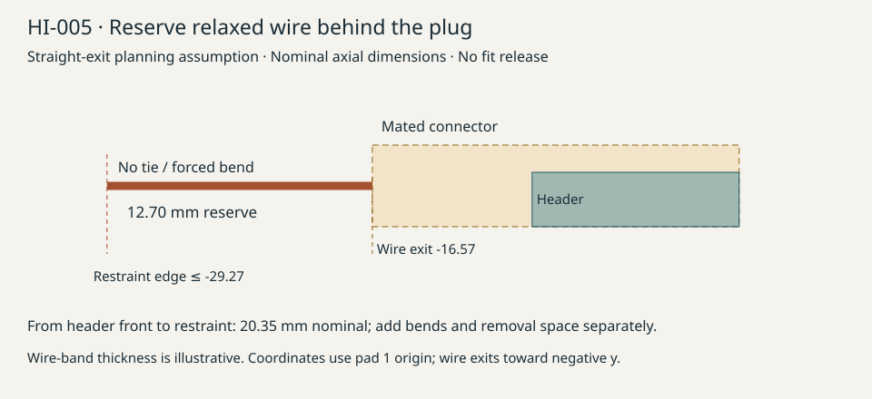

HI-005 · 26 November 2026 · Placement constraint
Reserve wire space before placing connectors
Keep a relaxed wire section behind each candidate pot plug. A tie against the housing can load the contacts even when the connector bodies clear nearby parts. The ten pot interfaces now export an axial reservation for mechanical placement; no native connector has moved.

Source and limit
Molex PS-43045, revision R, page 21, section 8.4 recommends 12.70 mm of relaxed wire for 2–8 circuits. Wire gauge, construction and insulation can require adjustment. This is separate from bend radius and unplugging travel. The manufacturer text was read; its dimension illustration was not visually verified because the local download timed out.
Planning calculation
Use HI-004 nominal geometry and reserve a straight 12.70 mm section from the housing wire-exit face. This is an engineering placement assumption, pending drawing and sample confirmation. It does not establish a complete three-dimensional clearance envelope.
With pad 1 as origin and the wires exiting toward negative \(y\):
\[y_{\mathrm{exit}}=-16.57\,\mathrm{mm},\qquad L_{\mathrm{free}}=12.70\,\mathrm{mm}.\]
\[y_{\mathrm{restraint}}\leq y_{\mathrm{exit}}-L_{\mathrm{free}}=-29.27\,\mathrm{mm}.\]
Measure to the nearest edge of a tie, clamp or forced bend, not its centre. A 2 mm wide tie centred at the boundary infringes the reserve by 1 mm.
\[D_{\mathrm{front}}=(-8.92)-(-29.27)=20.35\,\mathrm{mm},\qquad D_{\mathrm{rear}}=0.99-(-29.27)=30.26\,\mathrm{mm}.\]
The header-only check therefore misses 20.35 mm from its front to the proposed first-restraint boundary: 7.65 mm for the mate plus 12.70 mm for relaxed wire. These are nominal planning distances, not an approved cable length or maximum enclosure size.
Placement and service instructions
- Consume each local reservation from the generated mechanical interface; transform it with the connector placement.
- Keep restraints and forced routing outside the reserved region; check the chosen wire's bends separately.
- Reserve hand access to the latch and a clear withdrawal path; relaxed wire does not provide either.
- Keep ties and clips on the fixed structure or removable metal assembly specified by the harness route. Do not attach them to the removable rear wood.
- Use the shortest workable complete pot path, then check cable capacitance against HI-003. Mechanical slack can affect treble; a long service loop is not automatically acceptable.
- Check the populated assembly for rear-cover removal, chassis extraction and drill access before freezing holes.
Evidence and remaining work
Eight boundary and invalid-input controls pass, including rejection of a tie placed by its centre. Ten interfaces are exported: nine Main and one Reverb. Four native-board hashes are retained. Actual placements checked: zero. Full drawing tolerances, cavity view, selected cable, crimps, electrical fault insulation, bends, latch and withdrawal remain unqualified.
The next integration step is a per-pot voltage/fault review and current drawing comparison, followed by connector placement in the populated assembly. The known 46 mm chuck diameter does not close the remaining drill body and bit measurements.
Vocabulary key
- Restraint
- A tie, clamp or other feature that limits wire movement.
- Relaxed wire
- Wire left free of forces that reposition the contacts inside the housing.
- Axial
- Along the connector insertion direction.
- Datum
- The reference from which a dimension is measured.
- Nominal
- The stated design dimension before tolerances.
- Envelope
- The space reserved for a part and stated allowances.
- Withdrawal
- The movement needed to unplug the connector.
- Capacitance
- Charge storage between conductors that can change high-frequency response.